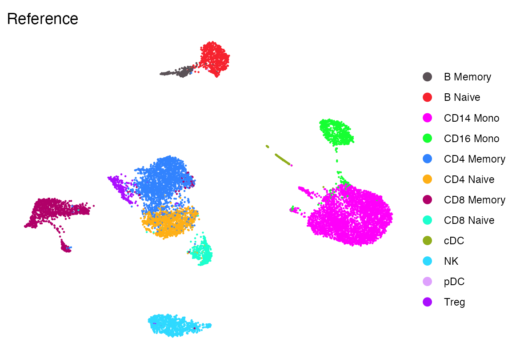
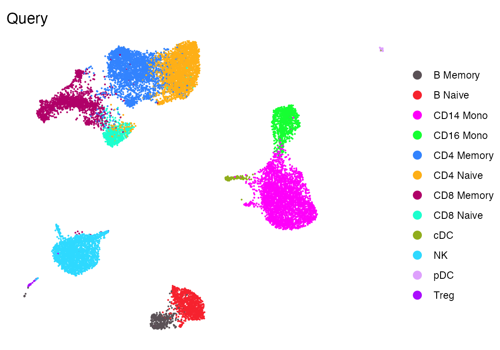
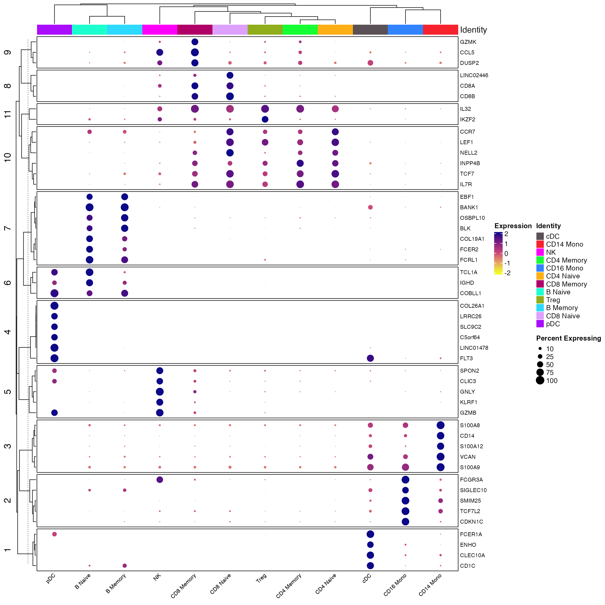
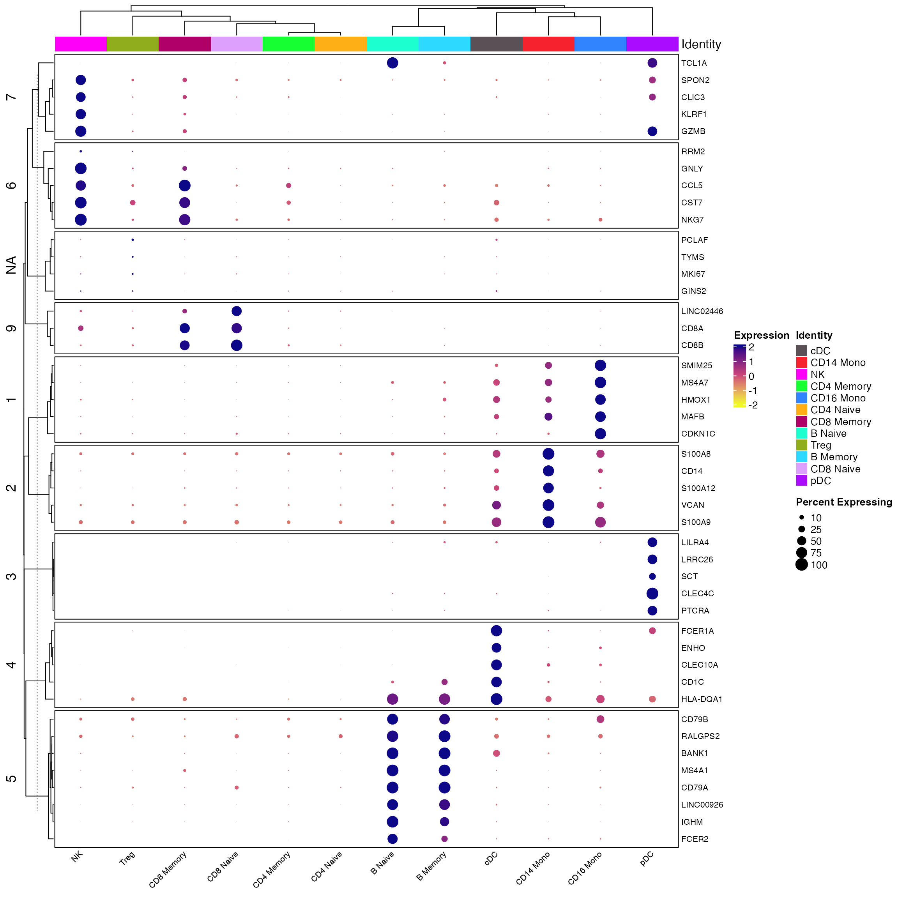
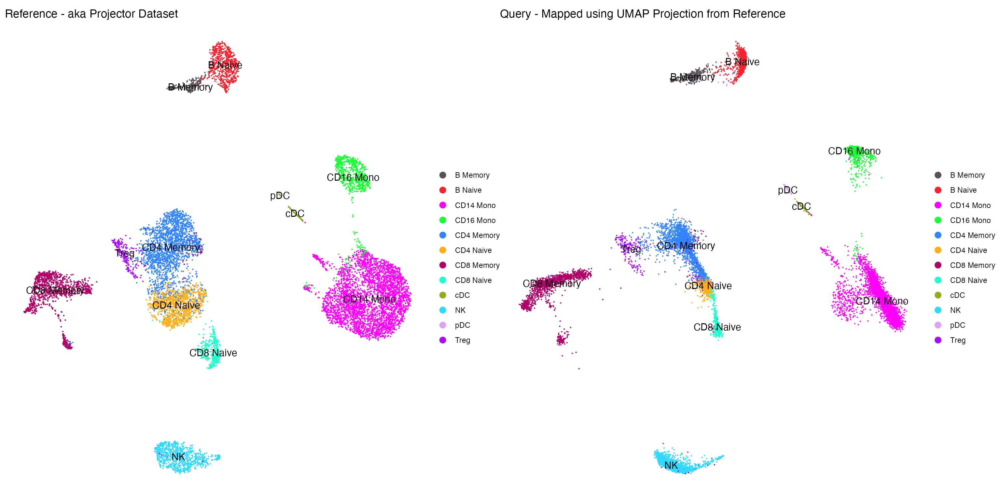
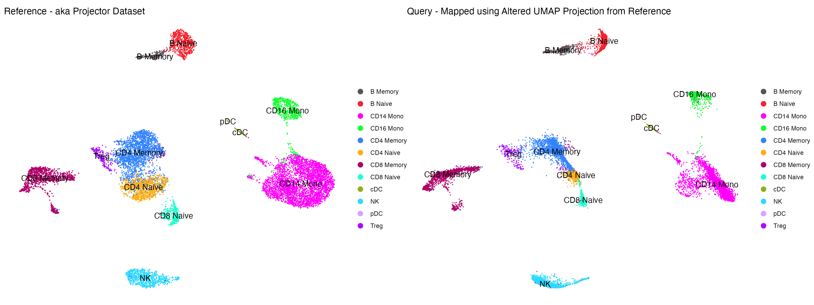

How to use UMAP transform on a single cell dataset (Seurat) using Seurat Workflow
2024-09-26
ProjectDataSeuratWorkflow.RmdNote that this code was inspired by and adapted from:
Installing flscuts
First, ensure you have the devtools R package installed,
which allows you to install packages from GitHub. If
devtools is installed, you can easily install using the
following command:
devtools::install_github("furlan-lab/flscuts")Loading data
In this section, we’ll load two Seurat objects, fix the celltypes so they harmonize, and create some colors.
# Load required packages
suppressPackageStartupMessages({
library(flscuts)
library(Seurat)
library(monocle3)
library(viewmastR)
library(ggplot2)
library(scCustomize)
library(tidyr)
})Load reference dataset, run Seurat workflow, and make some colors
seur <- readRDS(file.path(ROOT_DIR1, "240926_final_object.RDS"))
# Make some colors
cols1 <- as.character(pals::polychrome()[c(1,3:13)])
seur <- NormalizeData(seur) %>% FindVariableFeatures() %>% ScaleData() %>% RunPCA() %>% RunUMAP(dims=1:30, return.model = T)
DimPlot_scCustom(seur, group.by = "celltype", colors_use = cols1)+theme_void()+ggtitle("Reference")
Load query dataset, run Seurat workflow
seu <-readRDS(file.path(ROOT_DIR3, "240926_5p_seu.RDS"))
seu <- NormalizeData(seu) %>% FindVariableFeatures() %>% ScaleData() %>% RunPCA() %>% RunUMAP(dims=1:30, return.model = T)
DimPlot_scCustom(seu, group.by = "celltype", colors_use = cols1)+theme_void()+ggtitle("Query")
Make sure labels are correct
In this code, we show that the labels given to the reference and query cells are correct.
First the reference
Idents(seur) <- seur$celltype
all_markers <- FindAllMarkers(object = seur) %>%
Add_Pct_Diff() %>% dplyr::filter(pct_diff > 0.6)
top_markers <- Extract_Top_Markers(marker_dataframe = all_markers, num_genes = 5, named_vector = FALSE,
make_unique = TRUE)
Clustered_DotPlot(seurat_object = seur, features = top_markers, colors_use_idents = cols1, k=11, plot_km_elbow = F)
And the query
Idents(seu) <- seu$celltype
all_markers <- FindAllMarkers(object = seu) %>%
Add_Pct_Diff() %>% dplyr::filter(pct_diff > 0.6)
top_markers <- Extract_Top_Markers(marker_dataframe = all_markers, num_genes = 5, named_vector = FALSE,
make_unique = TRUE)
Clustered_DotPlot(seurat_object = seur, features = top_markers, colors_use_idents = cols1, k=11, plot_km_elbow = F)
Find Transfer Anchors
anchors <- FindTransferAnchors(
reference = seur,
query = seu,
reference.reduction = 'pca',
features = rownames(x = seur[["pca"]]@feature.loadings),
dims = 1:30,
nn.method = "annoy",
k.filter = NA,
verbose = TRUE
)Map using anchors
seu.1 <- MapQuery(
reference = seur,
query = seu,
anchorset = anchors,
refdata = list(celltype = "celltype"),
reference.reduction = "pca",
reduction.model = "umap"
)
p0 <- DimPlot_scCustom(seur, group.by = "celltype", label = T, colors_use = cols1) +theme_void()+ggtitle("Reference - aka Projector Dataset")
p1 <- DimPlot_scCustom(seu.1, reduction = "ref.umap",group.by = "predicted.celltype", label = T, colors_use = cols1) + NoLegend() +theme_void()+ggtitle("Query - Mapped using UMAP Projection from Reference")
p0+p1
Alter parameters of UMAP model and redo projection
If you would like to alter the umap parameters you may do so as follows, then redo the projection.
# set embeddings
seur[["umap.new"]] <- CreateDimReducObject(embeddings = seur[["umap"]]@cell.embeddings, key = "UMAPnew_", assay = "RNA")
# set UMAP models
umap.new.model <- list()
umap.new.model$n_epochs <- 1000
umap.new.model$alpha <-1
umap.new.model$method <- "umap"
umap.new.model$negative_sample_rate <- 5
umap.new.model$gamma <- 1
umap.new.model$approx_pow <- 0
umap.new.model$n_neighbors <- 10
umap.new.model$metric$cosine <- list()
umap.new.model$embedding <- seur[["umap.new"]]@cell.embeddings
ab_param <- uwot:::find_ab_params(spread = 1, min_dist = 0.3)
umap.new.model$a <- ab_param["a"]
umap.new.model$b <- ab_param["b"]
seur[["umap.new"]]@misc$model <- umap.new.model
seu.2 <- MapQuery(
reference = seur,
query = seu,
anchorset = anchors,
refdata = list(celltype = "celltype"),
reference.reduction = "pca",
reduction.model = "umap.new"
)
p2 <- DimPlot_scCustom(seu.2, reduction = "ref.umap",group.by = "predicted.celltype", label = T, colors_use = cols1) + NoLegend() +theme_void()+ggtitle("Query - Mapped using Altered UMAP Projection from Reference")
p0+p2
Appendix
## R version 4.3.1 (2023-06-16)
## Platform: x86_64-apple-darwin20 (64-bit)
## Running under: macOS Sonoma 14.6.1
##
## Matrix products: default
## BLAS: /Library/Frameworks/R.framework/Versions/4.3-x86_64/Resources/lib/libRblas.0.dylib
## LAPACK: /Library/Frameworks/R.framework/Versions/4.3-x86_64/Resources/lib/libRlapack.dylib; LAPACK version 3.11.0
##
## locale:
## [1] en_US.UTF-8/en_US.UTF-8/en_US.UTF-8/C/en_US.UTF-8/en_US.UTF-8
##
## time zone: America/Los_Angeles
## tzcode source: internal
##
## attached base packages:
## [1] stats4 stats graphics grDevices utils datasets methods
## [8] base
##
## other attached packages:
## [1] tidyr_1.3.1 scCustomize_2.1.2
## [3] ggplot2_3.5.0 viewmastR_0.2.3
## [5] monocle3_1.4.3 SingleCellExperiment_1.22.0
## [7] SummarizedExperiment_1.30.2 GenomicRanges_1.52.1
## [9] GenomeInfoDb_1.41.1 IRanges_2.34.1
## [11] S4Vectors_0.38.2 MatrixGenerics_1.12.3
## [13] matrixStats_1.2.0 Biobase_2.60.0
## [15] BiocGenerics_0.46.0 Seurat_5.0.3
## [17] SeuratObject_5.0.1 sp_2.1-3
## [19] flscuts_0.1.0
##
## loaded via a namespace (and not attached):
## [1] fs_1.6.3 spatstat.sparse_3.0-3
## [3] bitops_1.0-7 lubridate_1.9.3
## [5] RcppMsgPack_0.2.3 httr_1.4.7
## [7] RColorBrewer_1.1-3 doParallel_1.0.17
## [9] backports_1.4.1 tools_4.3.1
## [11] sctransform_0.4.1 utf8_1.2.4
## [13] R6_2.5.1 lazyeval_0.2.2
## [15] uwot_0.1.16 GetoptLong_1.0.5
## [17] withr_3.0.0 gridExtra_2.3
## [19] progressr_0.14.0 cli_3.6.2
## [21] textshaping_0.3.7 Cairo_1.6-2
## [23] spatstat.explore_3.2-6 fastDummies_1.7.3
## [25] labeling_0.4.3 sass_0.4.9
## [27] spatstat.data_3.0-4 ggridges_0.5.6
## [29] pbapply_1.7-2 pkgdown_2.0.7
## [31] systemfonts_1.0.6 foreign_0.8-86
## [33] dichromat_2.0-0.1 parallelly_1.37.1
## [35] maps_3.4.2 limma_3.56.2
## [37] pals_1.8 rstudioapi_0.15.0
## [39] generics_0.1.3 shape_1.4.6.1
## [41] gtools_3.9.5 ica_1.0-3
## [43] spatstat.random_3.2-3 dplyr_1.1.4
## [45] Matrix_1.6-5 ggbeeswarm_0.7.2
## [47] fansi_1.0.6 abind_1.4-5
## [49] lifecycle_1.0.4 yaml_2.3.8
## [51] edgeR_3.42.4 snakecase_0.11.1
## [53] recipes_1.0.10 Rtsne_0.17
## [55] paletteer_1.6.0 grid_4.3.1
## [57] promises_1.2.1 crayon_1.5.2
## [59] miniUI_0.1.1.1 lattice_0.22-5
## [61] beachmat_2.16.0 cowplot_1.1.3
## [63] mapproj_1.2.11 pillar_1.9.0
## [65] knitr_1.45 ComplexHeatmap_2.16.0
## [67] rjson_0.2.21 boot_1.3-28.1
## [69] future.apply_1.11.1 codetools_0.2-19
## [71] leiden_0.4.3.1 glue_1.7.0
## [73] data.table_1.15.2 vctrs_0.6.5
## [75] png_0.1-8 spam_2.10-0
## [77] gtable_0.3.4 rematch2_2.1.2
## [79] assertthat_0.2.1 cachem_1.0.8
## [81] gower_1.0.1 xfun_0.42
## [83] prodlim_2023.08.28 S4Arrays_1.2.0
## [85] mime_0.12 tidygraph_1.3.1
## [87] survival_3.5-7 timeDate_4032.109
## [89] pbmcapply_1.5.1 iterators_1.0.14
## [91] hardhat_1.3.1 lava_1.8.0
## [93] ellipsis_0.3.2 fitdistrplus_1.1-11
## [95] ipred_0.9-14 ROCR_1.0-11
## [97] nlme_3.1-164 bit64_4.0.5
## [99] RcppAnnoy_0.0.22 bslib_0.6.1
## [101] irlba_2.3.5.1 rpart_4.1.23
## [103] vipor_0.4.7 KernSmooth_2.23-22
## [105] colorspace_2.1-0 Hmisc_5.1-2
## [107] nnet_7.3-19 ggrastr_1.0.2
## [109] tidyselect_1.2.1 bit_4.0.5
## [111] compiler_4.3.1 htmlTable_2.4.2
## [113] BiocNeighbors_1.18.0 hdf5r_1.3.11
## [115] desc_1.4.3 DelayedArray_0.26.7
## [117] plotly_4.10.4 checkmate_2.3.1
## [119] scales_1.3.0 lmtest_0.9-40
## [121] stringr_1.5.1 digest_0.6.35
## [123] goftest_1.2-3 presto_1.0.0
## [125] spatstat.utils_3.1-0 minqa_1.2.6
## [127] rmarkdown_2.26 XVector_0.40.0
## [129] htmltools_0.5.7 pkgconfig_2.0.3
## [131] base64enc_0.1-3 lme4_1.1-35.1
## [133] sparseMatrixStats_1.12.2 highr_0.10
## [135] fastmap_1.1.1 rlang_1.1.3
## [137] GlobalOptions_0.1.2 htmlwidgets_1.6.4
## [139] UCSC.utils_1.1.0 shiny_1.8.0
## [141] DelayedMatrixStats_1.22.6 farver_2.1.1
## [143] jquerylib_0.1.4 zoo_1.8-12
## [145] jsonlite_1.8.8 BiocParallel_1.34.2
## [147] ModelMetrics_1.2.2.2 BiocSingular_1.16.0
## [149] RCurl_1.98-1.14 magrittr_2.0.3
## [151] Formula_1.2-5 GenomeInfoDbData_1.2.10
## [153] dotCall64_1.1-1 patchwork_1.2.0
## [155] munsell_0.5.0 Rcpp_1.0.12
## [157] viridis_0.6.5 reticulate_1.35.0
## [159] pROC_1.18.5 stringi_1.8.3
## [161] miloR_1.8.1 ggraph_2.2.1
## [163] zlibbioc_1.46.0 MASS_7.3-60.0.1
## [165] plyr_1.8.9 parallel_4.3.1
## [167] listenv_0.9.1 ggrepel_0.9.5
## [169] forcats_1.0.0 deldir_2.0-4
## [171] graphlayouts_1.1.0 splines_4.3.1
## [173] tensor_1.5 circlize_0.4.16
## [175] locfit_1.5-9.8 igraph_2.0.3
## [177] spatstat.geom_3.2-9 RcppHNSW_0.6.0
## [179] reshape2_1.4.4 ScaledMatrix_1.8.1
## [181] evaluate_0.23 ggprism_1.0.4
## [183] nloptr_2.0.3 foreach_1.5.2
## [185] tweenr_2.0.3 httpuv_1.6.14
## [187] RANN_2.6.1 purrr_1.0.2
## [189] polyclip_1.10-6 future_1.33.1
## [191] clue_0.3-65 scattermore_1.2
## [193] ggforce_0.4.2 janitor_2.2.0
## [195] rsvd_1.0.5 xtable_1.8-4
## [197] RSpectra_0.16-1 later_1.3.2
## [199] class_7.3-22 viridisLite_0.4.2
## [201] ragg_1.3.0 tibble_3.2.1
## [203] memoise_2.0.1 beeswarm_0.4.0
## [205] cluster_2.1.6 timechange_0.3.0
## [207] globals_0.16.3 caret_6.0-94
getwd()## [1] "/Users/sfurlan/develop/flscuts/vignettes"